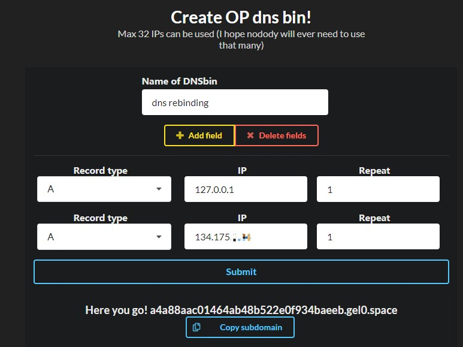
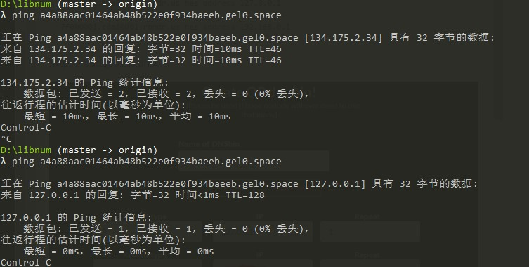

DNS TTL
TTL值全称是“生存时间（Time To Live)”，简单的说它表示DNS记录在DNS服务器上缓存时间，数值越小，修改记录各地生效时间越快。
当各地的DNS(LDNS)服务器接受到解析请求时，就会向域名指定的授权DNS服务器发出解析请求从而获得解析记录；该解析记录会在DNS(LDNS)服务器中保存一段时间，这段时间内如果再接到这个域名的解析请求，DNS服务器将不再向授权DNS服务器发出请求，而是直接返回刚才获得的记录；而这个记录在DNS服务器上保留的时间，就是TTL值。
常见的设置TTL值的场景：
- 增大TTL值，以节约域名解析时间
- 减小TTL值，减少更新域名记录时的不可访问时间
DNS Rebinding
原理就是上面的第二种，设置一个非常小的TTL值，让客户端发出的两次请求获得的解析结果不同。
常见ssrf防御场景：
php的waf做判断的时候，第一次会解析域名的ip，然后判断这个ip是不是内网ip，如果不是内网ip的时候，再去真正用curl请求这个域名。
这就牵涉到了，curl请求这个域名会做第二次域名解析，重新对dns服务器进行请求，获得到一个内网ip，这时候就是绕过限制请求到了内网资源。
当然需要ttl设置为0
1 | $dst = @$_GET['KR']; |
使用dns rebinding测试网站提供的域名（测试不太好使，解析不到该域名，待研究），随机返回两个ip地址。（使用时应该需要多测几遍）
1 | $ host 7f000001.c0a80001.rbndr.us |
一个自定义dns解析的网站：http://rbnd.gl0.eu/dnsbin

在record中设置要解析的ip地址，submit后会自动生成一个domain。解析这个domain就会得到填写的ip地址。
